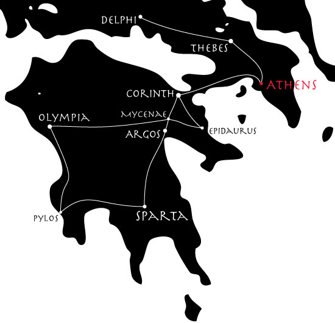

Bay Leaves and Honey Wine
The map-maker can be used in quite versatile ways, in short; though the default is a schematic line-and-box affair, that is hardly the only option. While the EPS created is not always the result of our dreams, Inform usually can be made to do most of the hard and boring part, leaving the author to do only a bit of aesthetic touchup.
In many previous examples, we have sent hapless deities wandering around a map of Greece; we might like to chart that for ourselves, in a semi-realistic fashion. So:
This produces a line-and-dot map, where the names of rooms do not appear inside the city-circles, but rather (thanks to "room-name-offset") off to one side. We specify a long room-name-length because we want all the names of the cities spelled out in full; and we make all the elements white because we intend to place them over a black background layer.
We can then superimpose this on a vector map of Greece and tweak the exact positions of cities a little by hand (in Adobe Illustrator, as it happens, but other programs would also allow this level of editing). The result:
